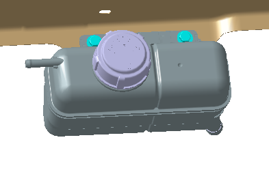
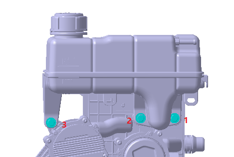

Слить охлаждающую жидкость. Слив и заправка уровня охлаждающей жидкости
С помощью клещей для хомутов снять хомут водяного трубки, демонтировать водяную трубку.
Выкрутить крепежные болты расширительного бачка и снять расширительный бачок. Крутящий момент: 6 ± 1 N·m

Порядок Установка обратен порядку Снятие, при этом по завершении установки обратите внимание на следующие меры предосторожности, иначе это приведет к неисправности силовой установки автомобиля.
После завершения установки залить охлаждающую жидкость. Слив и заправка уровня охлаждающей жидкости
Включить в системе режим заправки и долить охлаждающую жидкость до стабилизации ее уровня на отметке MAX расширительного бачка. Слив и заправка уровня охлаждающей жидкости
Запустить автомобиль, проверить нормальность уровня охлаждающей жидкости (уровень находится между отметками MAX и MIN), при необходимости долить охлаждающую жидкость.
Слить охлаждающую жидкость. Слив и заправка уровня охлаждающей жидкости
С помощью клещей для хомутов снять хомут водяной трубки, демонтировать водяную трубку; одновременно снять водяные трубки и стяжки жгутов проводов с расширительного бачка.
Выкрутить четыре крепежных болта расширительного бачка и снять расширительный бачок.

Порядок Установка обратен порядку Снятие, при этом по завершении установки обратите внимание на следующие меры предосторожности, иначе это приведет к неисправности силовой установки автомобиля.
Перед заменой расширительного бачка убедитесь в целостности двух уплотнительных колец и их правильном положении. Нанесите охлаждающую жидкость на уплотнительные кольца. Слив и заправка уровня охлаждающей жидкости
Порядок сборки крепежных болтов: вставить заливное горлышко расширительного бачка в монтажное отверстие, сначала наживить болт в позиции 3, затем затянуть болты в позициях 1 и 2, и в завершение затянуть оставшиеся два болта.
После завершения установки залить охлаждающую жидкость. Слив и заправка уровня охлаждающей жидкости
Включить в системе режим заправки и долить охлаждающую жидкость до стабилизации ее уровня на отметке MAX расширительного бачка.
Запустить автомобиль, проверить нормальность уровня охлаждающей жидкости (уровень находится между отметками MAX и MIN), при необходимости долить охлаждающую жидкость.